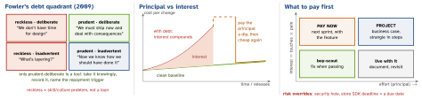

engineering · folio
In one line: Technical debt (Cunningham, 1992) is the extra cost future changes pay because of a shortcut taken — or a better design learned — earlier. Principal = the effort to fix it; interest = the extra effort (and risk) every change in that area pays until you do. Code nobody touches charges no interest. Manage debt like a portfolio: make it visible, price it in product terms, pay where interest is highest — and record why big decisions were made (ADRs) so nobody re-litigates them in a year.
Download PDF Print view LaTeX source


How it works
- Kinds: code (duplication, god objects) · architecture (wrong boundaries, a shared singleton everything reaches) · test (no seams, flaky suite) · dependency (old SDKs, deprecated APIs, an abandoned library — on mobile the stores set the due date) · build/CI (slow, manual release steps) · knowledge (one person understands payments: bus factor 1).
- Measure the interest, not the ugliness: lead time for changes in that area, bugs and incidents per module, change-failure rate, hotspots (churn × complexity), build and CI time, flaky-test rate, share of unplanned work, dependency age. Before/after numbers make the case.
- Prioritise: interest (how often the code is touched × how much each touch hurts) × risk (security, crash, deadline) / effort. Pay adjacent to roadmap work (“to build X we first split Y”); keep a standing share of capacity for the rest; big items become projects with milestones, each one shippable.
- Register it: a ticket per debt item with the interest observed, the principal estimate and the trigger (“when we add a 2nd payment provider”). A
TODOin code is not a register.
Talking to product — their currency
- Not “the code is bad” but: “every checkout change costs +3 days and 2 of the last 5 incidents started there; 2 sprints of work removes both”. Cost of delay, risk, and the roadmap item it unblocks.
- Offer options with trade-offs (do now / with feature X / accept and monitor), let them choose — then record the choice. Report the payoff after, so the next request is trusted.
RFC / design doc vs ADR
| RFC / design doc | ADR | |
|---|---|---|
| purpose | propose, gather feedback before deciding | record a decision + its context |
| when | big or cross-team change | every architecturally significant choice |
| size | pages: goals, non-goals, alternatives, rollout, risks | 1 page |
| lifecycle | draft → review → accepted / rejected | proposed → accepted → deprecated / superseded by ADR-n |
| lives | doc tool or repo, comment threads | repo, docs/adr/0012-title.md, beside the code |
An accepted RFC usually produces one or more ADRs. ADRs are immutable: to change your mind, write a new ADR that supersedes the old one — the history of why is the value.
Remember
“Principal + interest; pay where interest is highest; say it in product terms; write down why.”
Example — an ADR (Nygard’s template)
# ADR 0012: Move iOS dependencies from CocoaPods to SPM
Status: Accepted, 2026-03-02. Supersedes ADR 0003.
Context: CocoaPods trunk stops accepting new podspecs
on 2 Dec 2026, so pods get no new versions. We use
14 pods; 11 ship an SPM package. pod install adds
~4 min to every CI job and needs a Ruby toolchain.
Decision: Move all 14 to SPM this quarter, one PR per
pod. The 3 without SPM: vendor the vendor's binary
XCFramework (2) and replace the 3rd with ~200 lines.
Consequences:
+ one resolver + Package.resolved; no Ruby on CI
- ~2 weeks of work; 2 vendored SDKs updated by handGood ADR: context states the forces (facts, constraints, numbers), decision is active voice (“we will”), consequences lists the bad ones too. Also useful: options considered.
Build vs buy (or open source)
- Buy / adopt what is not your differentiator and hard to do well (crash reporting, payments, maps, video). Build what is the product, or when cost grows with scale, or privacy, compliance, offline or latency rule the vendor out.
- Compare total cost of ownership: licence + integration + upkeep + upgrades + exit cost (the migration off it). Cap the exit cost: wrap the SDK behind your protocol (adapter / port) in one module; its types never leak into the domain.
- Scorecard (1–5 × weight, table goes in the ADR): fit (3) · maintenance (3) · security + privacy (3) · size + transitive deps (2) · platform support — min OS, Swift 6, RN New Arch (2) · exit cost (2) · docs (1) · licence = pass/fail gate.
Traps
- “Let’s rewrite it” as the debt plan — strangle it in shippable steps.
- Calling everything you dislike “debt”: no recurring cost = no interest = no priority.
- A yearly “debt sprint” — debt returns; pay continuously, next to features.
- Editing or deleting an old ADR — supersede it; the old context is the point.
- Picking a library by GitHub stars and forgetting what leaving it will cost.